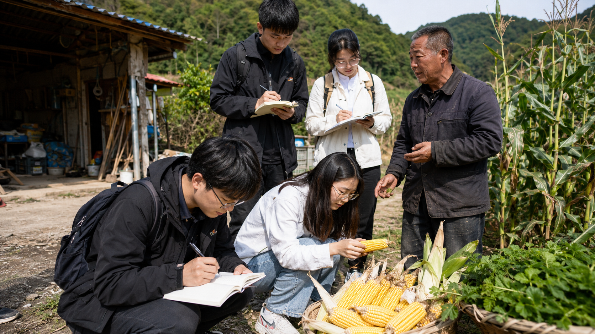
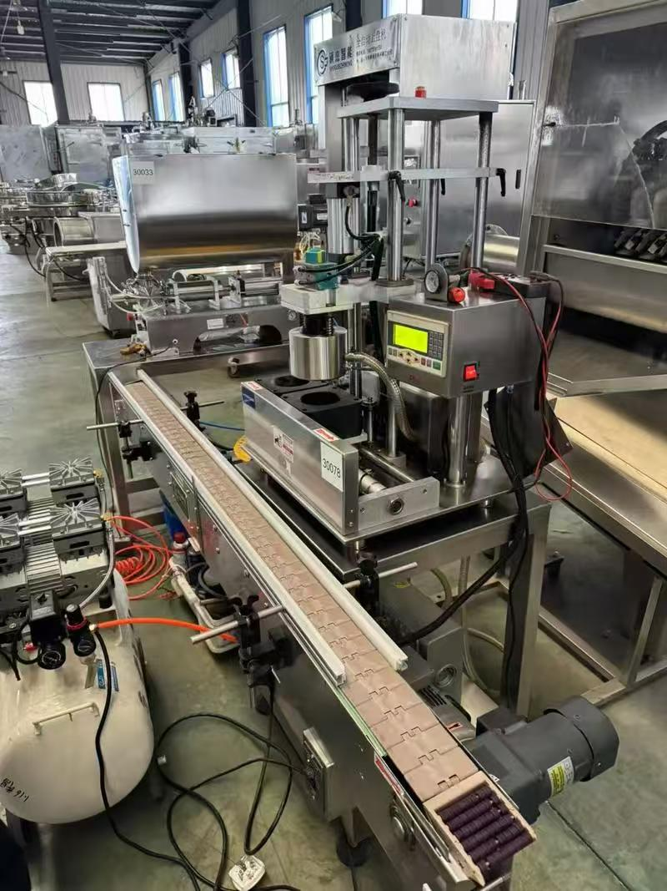
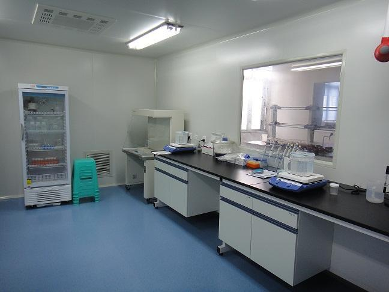
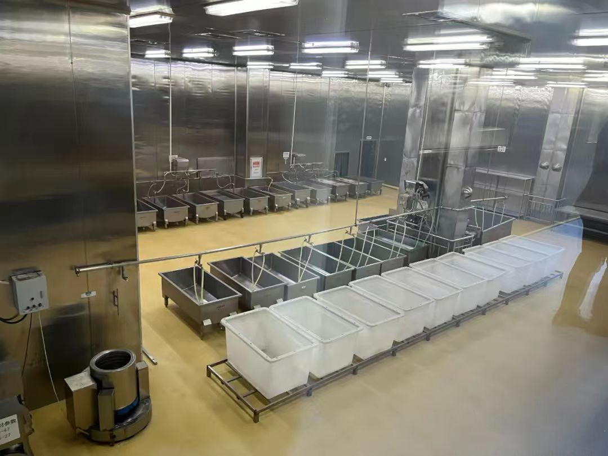

医学生青年团队走进吉林革命老区，深入白山市、通化市等东北抗联战斗过的地方，走访合作社、调研特色农产品，以专业知识赋能老区食品产业创新，让好食材走出深山，让好日子有奔头。
深入革命老区的每一次走访，都是对"把青春写进黑土地"最真切的践行
走进长春东北沦陷史陈列馆，重温东北人民十四年艰苦卓绝的抗日斗争历史，感悟不屈不挠、英勇抗争的抗联精神。
走访当地鲜食玉米、山野菜种植合作社，了解农产品生产现状、销售渠道与农户面临的困难，为后续订单化采购打下基础。

深入长白山地区，调研蓝莓、黑木耳、荞麦等吉林特色农产品的种植环境和品质特征，筛选适合深加工的优质原料。
依托现代食品科技，对调研带回的原料进行低温烘焙、冻干锁鲜等工艺测试，开发出四款兼具营养与风味的健康食品。



已与吉林省内20余家合作社及农户建立联系与合作意向
预计稳定运营后年采购鲜食玉米、山野菜等特色农产品
围绕吉林特色食材开发了四款高附加值健康食品
全部核心原料均源自吉林革命老区，确保品质可追溯